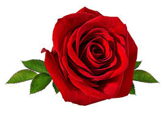
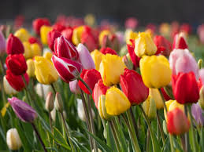
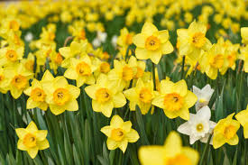

5 Most Popular Flowers in the World
-
Roses - One of the most iconic and beloved flowers, known for their beauty, fragrance, and rich symbolism. They belong to the genus Rosa and come in a variety of colors, each carrying different meanings.

-
Tulips - Vibrant, cup-shaped flowers from the genus Tulipa, celebrated for their simplicity and elegance. Known for "Tulip Mania" in the 17th century in the Netherlands.

-
Sunflowers - Bright flowers with daisy-like heads and yellow petals. Known for their ability to follow the sun and symbolize warmth and loyalty.
-
Daffodils - Known for their bright yellow trumpet-shaped blooms, symbolizing spring, rebirth, and new beginnings.

-
Marigolds - Known for their bold yellow and orange hues and easy cultivation, marigolds symbolize warmth and happiness.